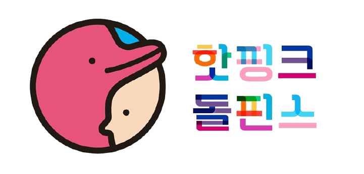
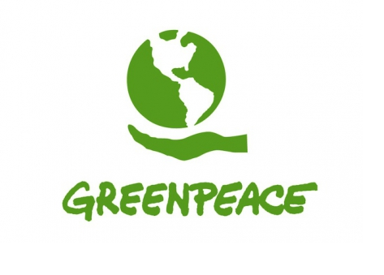
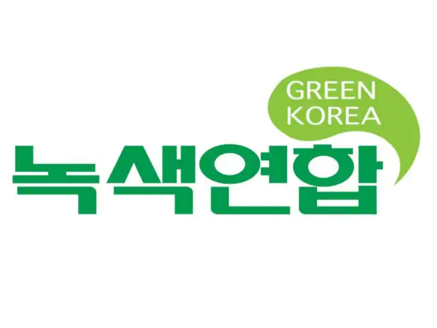

핫핑크돌핀스
해양환경단체 핫핑크돌핀스는 환경운동가 황현진과 평화활동가 조약골을 공동대표로 하여 2011년 설립되었으며,
건강한 해양생태계 보전과 돌고래 등 위기에 처한 해양생물 보호 활동을 합니다.

그린피스
그린피스는 전 지구적인 환경문제의 원인을 밝혀내고, 이를 해결하기 위해 평화적이고 창의적인 방식으로 활동하는 캠페인 단체이며 동물들의 터전을 보존하고 모두가 공존하는 지구를 만들기 위해 노력하고 있다.

녹색연합
녹색연합은 1991년 창립하여 우리나라 자연을 지키는 환경단체입니다. 주요 생태축인 백두대간과 DMZ를 보전하고 야생동물과 그들의 서식지를 지킵니다.
기후위기를 가속화하는 현장을 감시하며 에너지가 정의로운 세상, 쓰레기가 없는 지구, 자연과 사람이 조화로운 사회를 그려갑니다.